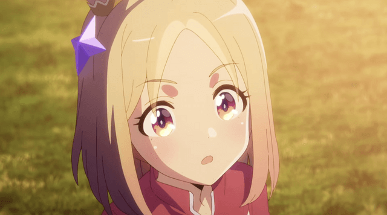

เนื้อเรื่องเกี่ยวกับ สาวม้า ที่กำลังเป็นที่นิยม
และได้ฝึกซ้อมกันที่สถาบันที่เป็นโรงเรียนสำหรับสาวม้าโดยเฉพาะ
หลังจากฝึกแล้ว พวกเธอต้องไปเข้าร่วมการแข่งขันที่จัดขึ้นตลอดทั้งปี โดยมี
ตัวละครหลักอยู่ 3 ตัว คือ
1.Narita Top Road
2.T.M. Opera O
3.Admire Vega
